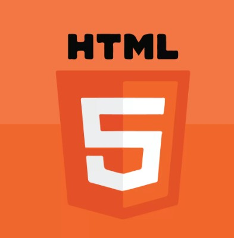

웹 문서를 만들기 위하여 사용하는 기본적인 웹 언어의 한 종류이다. 하이퍼텍스트를 작성하기 위해 개발되었다. 인터넷 서비스의 하나인 월드 와이드 웹을 통해 볼 수 있는 문서를 만들 때 사용하는 웹 언어의 한 종류이다. 특히 하이퍼텍스트를 작성하기 위해 개발되었으며, 인터넷에서 웹을 통해 접근되는 대부분의 웹 페이지들은 HTML로 작성된다.
HTML은 문서의 글자크기, 글자색, 글자모양, 그래픽, 문서이동(하이퍼링크) 등을 정의하는 명령어로서 홈페이지를 작성하는 데 쓰인다. HTML에서 사용하는 명령어는 태그(tag)라고 하는데 꺽쇠괄호를 사용하여 나타낸다. 일반적으로 태그는 시작과 끝을 표시하는 2개의 쌍으로 이루어져 있으나 "img", "br"등의 태그와 같이 시작태그만으로 그 영향을 나타내는 경우도 있으며, 종료 태그의 이름은 슬래시 문자[/]로 시작된다. 이와같이 HTML로 작성된 문서를 HTML문서라 하며 이 HTML로 작성된 문서를 웹 브라우저가 해석하여 이용자에게 보여주게 된다. HTML에서는 문서가 별도의 코드(code)를 인식하여 완벽한 하이퍼텍스트를 만들 뿐만 아니라 단어 또는 단문을 인터넷의 다른 장소나 파일로 연결시킬 수 있다.
HTML은 전자 문서의 서식을 정의하기 위해 만들어졌으며, 국제표준 SGML의 부분 집합으로 정의되었다. HTML은 SGML에서 특히 하이퍼텍스트를 강조하여 만들어진 언어이며, 아스키코드로 된 일반적인 텍스트로 구성되었다. 이 언어는 별도 컴파일러가 필요치 않으며, 웹 브라우저에서 해석이 가능한 사용하기 쉬운 언어로 각광을 받고 있다.
